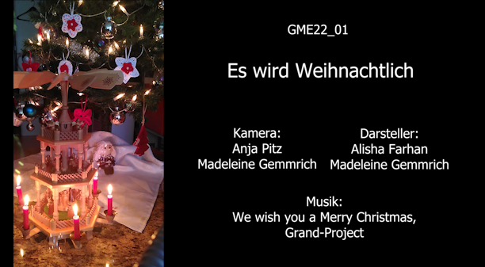

Mini Film Projekt
Mini Film Projekt für die Ausbildung. Thematisch war nur ein Kurzfilm gegeben. Da die Aufgabe kurz vor Weihnachten kam, habe ich "Dokumentiert", wie wir den Weihnachtsbaum und die Weihnachtspyramide aufgebaut haben. Hinterlegt mit Weihnachtsmusik.
Inhalt
Das Video zeigt, wie wir unseren Weihnachtsbaum aufstellen und schmücken. Des Weiteren wird die Weihnachtspyramide aufgebaut.
Storybaord
Anfangs steht die Idee und das Storyboard. Storyboard Mini Film Projekt
Aufnahme
Da die Aufgabe in der Weihnachtszeit kam, habe ich für den Anfang das Kisten aus dem Keller holen aufgenommen (bzw. hat mir da jemand geholfen). Das hab ich dann für das auspacken, aufstellen und schmücken genauso gemacht. Während des Auspackens wurde der Fokus von mir auf die kleine Gerichtet (Weihnachtsmütze auspacken und Ihr aufsetzen). Sie hat dann den Baum aufgestellt, geschmückt und ich habe Off-Screen geholfen. Nach dem Weihnachtsbaum habe ich das mit der Weihnachtspyramide genauso gemacht.
Schnitt
Geschnitten habe ich das Video dann auf "We wish you a merry christmas" von "Grand-Project". Der Versuch war pro "Zeile" im Lied eine Szene zu zeigen. Während der Strophen sollten die Szenen etwas mehr zeigen als im Refrain.
Fertiges Video
Das fertige Video lasse ich gerne auf Nachfrage zukommen. Hierzu einfach eine Mail schreiben (Impressum).